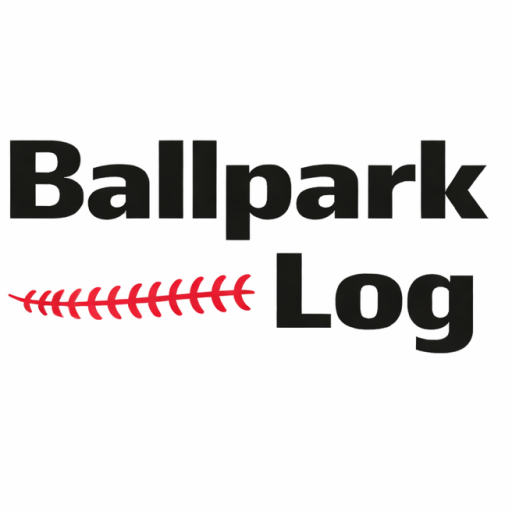

iOS
Android
Ballpark Log
応援しているプロ野球チームを 1 つ登録し、そのチームの試合に絞って観戦記録を残せるアプリです。
主な機能
- ユーザー登録時に応援チームを 1 つ選択し、2016 年以降の試合がカレンダーに自動表示されます（チーム変更は不可）。
- 観戦した日をカレンダーから選ぶだけで試合結果・スコアと合わせて記録可能。現地観戦の思い出を素早く残せます。
- レギュラーシーズンとポストシーズン（クライマックスシリーズ／日本シリーズ）を区別して年次の観戦成績を自動集計。
- 年別観戦履歴から NPB 公式サイトの詳細ページをすぐに開いて振り返りできます。
データとセキュリティ
本アプリはログイン必須で、観戦記録とユーザー情報は登録者本人のみが閲覧・編集できます。Firebase Authentication と Cloud Firestore を利用してデータを安全に管理しています。
関連リンク
運営者
Ballpark Log
ballpark.log.npb@gmail.com